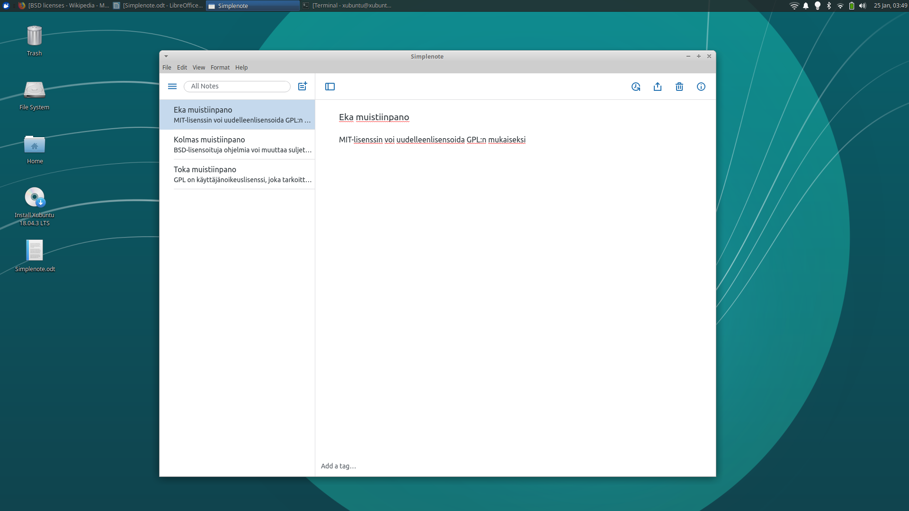
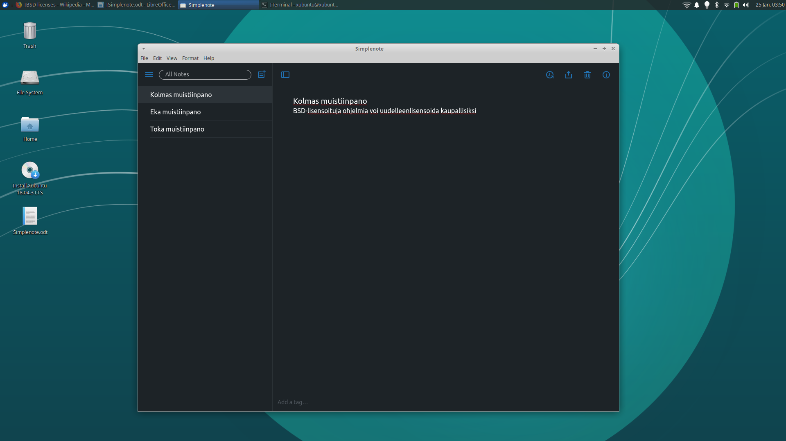

Aloitin tekemään Xubuntu 18.04.03 amd64 Linuxista livetikkua lataamalla levykuvaa ja työkalua tikun luomiseen osoitteista https://unetbootin.github.io/ ja https://xubuntu.org/. Kun levykuva on latautunut, käynnistän Unetbootin-työkalun. Vaihtoehtoina on joko ladata levykuva tai kopioida jo valmiiksi ladatusta tiedostosta, valitsen jälkimmäisen. Kun lataus on valmis, etsin levykuvan työkalussa, valitsen ok ja ohjelma alkaa kirjoittaa tikulle.

Hetken päästä ohjelma ilmoittaa asennuksen sujuneen onnistuneesti, suljen ohjelman ja siirryn testaamaan tikkua. Tämän koneen boot-menu aukeaa painamalla F12-näppäintä käynnistyksen yhteydessä.
Käynnistin koneen uudelleen, painoin F12 päästäkseni boot menuun ja
käynnistin linuxin tikulta. Näyttö, hiiri, näppäimistö ja internet-yhteys
eli kaikki tarvittava näyttää toimivan. Näppäimistön ulkoasu oli vaihtunut
oletusarvoisesti varmaankin yhdysvaltojen malliin, mutta sen sai
näppärästi vaihdettua terminaalista komennolla setxkbmap fi.
Tämän tehtävän tein pöytäkoneellani.
Valitsin asentaa Kritan, Simplenoten ja LibreOffice Draw:in
Ajoin terminaalissa komennon: sudo apt-get update && sudo apt-get install krita.
Kokeilin erilaisia siveltimien ja värien yhdistelmiä ja vein kuvan jpg-muotoisena.
Lopputulos näyttää tältä:
Asennustiedoston latasin täältä
Kokeilin muistiinpanojen luomista, poistamista ja muutoksia käyttöliittymän ulkoasuun. Asetuksista löydyi myös dark mode.
 Asensin ohjelman komennolla sudo apt-get install libreoffice-draw -y
Microsoftin vastaava suljetun lähdekoodin ohjelma on Microsoft visio
Kokeilin ohjelmaa tekemällä sillä LAMP-arkkitehtuuria kuvaavan kaavion käyttämällä teksti- nuoli- ja kuviotyökaluja.
Krita käyttää GNU General Public License version 2:a, ns. vahvan copyleftin lisenssiä. Tiivistetysti tämä tarkoittaa sitä, että ohjelmaa saa muokata ja jakaa, kunhan johdettu teos julkaistaan samalla lisenssillä kuin alkuperäinen teos. Siihen tulee sisällyttää alkuperäinen ohjelma, toimittaa lähdekoodi jakelun mukana, sekä säilyttää alkuperäiset tekijänoikeus- ja vastuuvapauslausekkeet. Ohjelmasta johdettuja teoksia ei saa alilisensoida tai alkuperäistä tekijää tai lisenssin haltijaa ei voi pitää vastuussa käytön aiheuttamista vahingoista. Ohjelmaan tehdyt muutokset täytyy olla selkeästi ilmaistu.
Simplenote on lisensoitu myös GPLv2:lla. Samat ehdot siis pätee kuin aiemmassa. Ohjelmaa saa muuttaa ja jakaa, mutta sen täytyy säilyä saman lisenssin alla ns. copyleft-periaatteen mukaisesti vaatien vapauksien säilyvän kaikilla käyttäjillä ja kaikissa johdetuissa teoksissa.
LibreOffice Draw on lisensoitu LGPLv3, GNU Lesser General Public License versio 3:lla. LGPL eroaa GPL:stä siten, että ohjelmat voidaan liittää yhteen ohjelmien osien kanssa, joita ei ole GPL- lisensoitu. Tämä mahdollistaa kaupallisten ohjelmistojen LGPL-lisensoitujen osien käytön ilman, että se velvoittaa heitä julkaisemaan lähdekoodia. Johtuen LibreOfficen juurista OpenOffice.org:ssa siinä käytetään LGPL:ää. Uudet muutokset on lisensoitava kaksoislisenssillä LGPLv3 ja MPL. LGPL:ää käytetään pääosin kirjastoissa. Se mahdollistaa kaupallisen käytön, muokkaamisen, jakelun, takuiden asettamisen ja patentoinnin. LGPL:ää ei voi alilisensoida, eikä lisenssin omistajaa voida pitää velvollisena vahingonkorvauksiin. Sen mukana täytyy ilmoittaa muutokset, sisällyttää alkuperäiset kopiot ohjelmasta tai ohjeet niiden hankkimiseksi, sekä jakaa lähdekoodi, sisällyttää lisenssi ja alkuperäinen tekijänoikeus sekä asennusohjeet.
Olen suunnitellut asentavani linuxin kannettavani kovalevylle, siispä varmuuskopioin järjestelmäkuvan siitä ulkoiselle kovalevylle, mikäli haluan käyttää windowsia kannettavassa joskus myöhemmin. Aloitin tietokoneen varmuuskopioinnin menemällä windowsin ohjauspaneeliin ja sieltä varmuuskopiointiin. Varmuuskopiointi-ikkunassa valitsen haluavani luoda järjestelmäkuvan.
Valittuani mitkä levyt haluan sisällyttää kopioon ja minne haluan sen tallentaa, alkaa työkalu luomaan järjestelmäkuvaa:
Varmuuskopio onnistui, suljin ohjelman, ejectasin ulkoisen kovalevyn ja otin johdon irti koneesta.